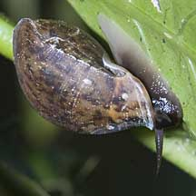
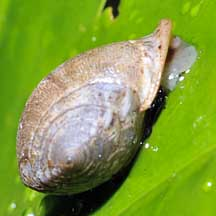

|
|
| shelled snails text index | photo index |
| Phylum Mollusca > Class Gastropoda > Family Ellobiidae |
| Pythia
snail Pythia sp. Family Ellobiidae updated Jul 2020 Where seen? This odd-shaped snail is sometimes seen in our back mangroves, on leaves and trunks of mangrove trees and mangrove plants. Sometimes seen in clusters of a few individuals. Pronounced 'pith-ee-uh', in Greek mythology 'Pythia' is the priestess of Apollo who delivered the oracles at Delphi. Features: 2-3cm. Shell smooth, shaped like a fat teardrop with a sharp tip. Shell opening small with a flared edge. It breathes air (instead of through gills like most other marine snails) and like others of the Family Ellobidae, it lacks an operculum. Body dark, paler towards the end of the foot, with short dark long tentacles. |
|
 Sungei Buloh Besar, Apr 11 |
 Pulau Semakau, Jan 09 |
 Pasir Ris Park, Dec 03 |
| What does it eat? It grazes on
algae growing on mangrove tree leaves and trunks. Human uses: In Indonesia, they are sometimes collected for food. |
 Sungei Buloh Besar, Apr 11 |
| Pythia snails on Singapore shores |
On wildsingapore
flickr
|
|
Links
References
|